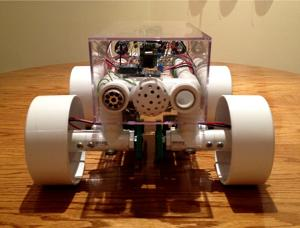
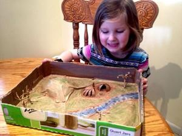

I finally decided to build a rover. It turned out to be one of the best projects I’ve ever pursued. It was so much fun! I’m seriously amazed at how much I learned about applied mechanics, electronics, and just the design process in general. The most rewarding part so far though has to be actually watching it drive around and interact with the real world. And I decided to name it ‘Adena.’ Why? Let me first explain why I wanted to build a rover to begin with...
Since I don’t work for NASA or SpaceX or any other one of my dream career institutions, I decided to live vicariously through ‘toys’ I build analogous to the real thing. I had never built a robot, so what would be a better project than my very own Mars rover? I’ve tried to design and build as much as possible from scratch, utilizing internet information resources sparingly so as to get the full experience. Plus, when you create something relatively original, the reward in the end is so much greater. So, I designed everything from the chassis to the drive mechanism, from the power circuit to the program the microcontroller runs on. (Of course, I didn’t design the chips or anything and I used schematics and datasheets, so it wasn’t totally original.) The only downside to designing everything yourself is that things probably won’t work nearly as well as they should, or even as you’d like them to. But again, the journey is the thing, not the destination. And this journey has taught me so much. The robot is just icing on the cake.

I decided to name it Adena because many space probes are named after famous explorers. I googled ancient explorers but none seemed to fit. Plus, they were all European. Well, I live in Ohio, so who were some of the first famous explorers to roam Ohio? Again, I found a few Europeans but nothing that stood out. Since this was my first rover, and the first rover (that I know of) to ever explore this part of Ohio (i.e. my backyard), my search lead to the very first known peoples to inhabit this area, period. There were a few nomadic tribes a few thousand years ago, but the first substantial group of people to move from hunter-gatherer to farmers and pottery-makers were a collection of various native american people called the Adena. To be clear, the Adena were not a specific Indian tribe rather, it is a term given to the collection of people who lived from around 1000BCE to 200BCE in the Ohio Valley area.
Sometimes unexpected things happen when we decide to take on unknown projects like this. Lucky for me, building a rover unexpectedly lead down a rabbit-hole of learning about ancient local cultures. Lucky because stumbling upon something that fascinates you makes you consider things you wouldn’t normally have and is a reward in and of itself.
But the best part is that I got to share that learning experience with my best friend in the whole world: my daughter Ella! We took a trip to the Ohio Historical Museum and spent a day gazing at 3000 year old artifacts of the Adena Culture, then playing in the Campbell Memorial Park on Shrum Mound - an actual Adena Culture mound! We ate lunch, then came home and decided to make our own mound so we built a scale model diorama of an Adena settlement. It was a great day...

A few quick technical details about the rover: The chassis is mostly PVC that I spliced together, plus a model car display case enclosure. It is controlled by an ATmega328 microcontroller – most of the parts I purchased relatively cheaply or found off of old computers I had lying around. The rover sports a temperature and barometric pressure sensor and can calculate its altitude. Adena has a light intensity sensor to measure ambient brightness, it has an on board compass to take directional readings, and has a serial TTL camera to take pictures as well. The rover has full range of motion and can turn and drive forward and backward. It runs off of a 12 volt rechargeable battery and 6 AAA’s. It communicates through wireless serial modules so almost any computer can interface with it. Basically, you control it with your computer by simply pressing certain buttons; for the gamers out there, W A S D controls movement. Oh yeah, it has a headlight, too.
I’ve been working on this project for about two months now. Of course, there are still a few tweaks to be made and but I feel I can officially call this project complete. Now I can move on to the next thing! The people to come after the Adena were known as the Hopewell. Can you guess what my next project will be named?